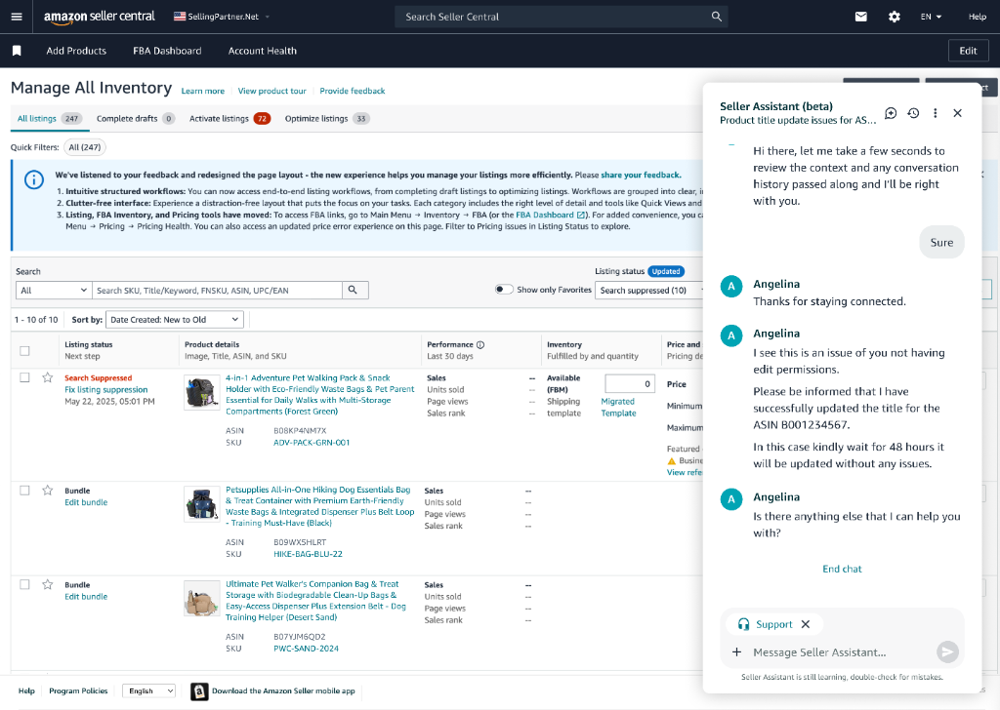
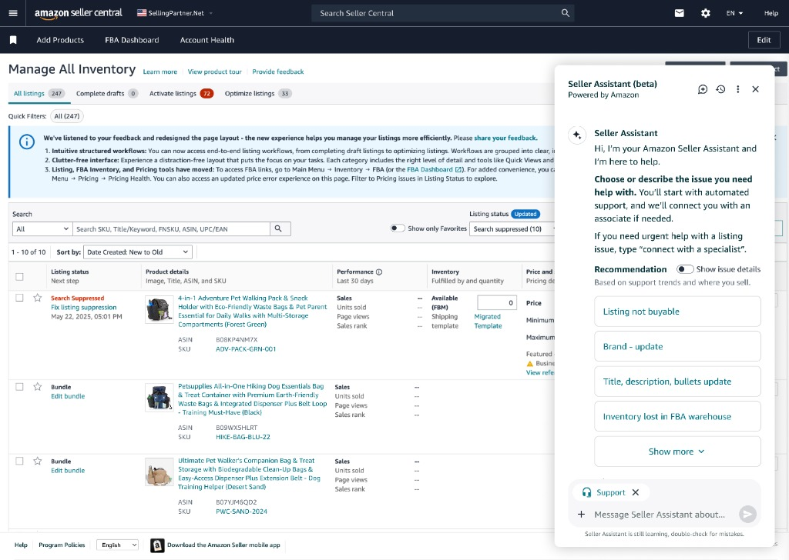
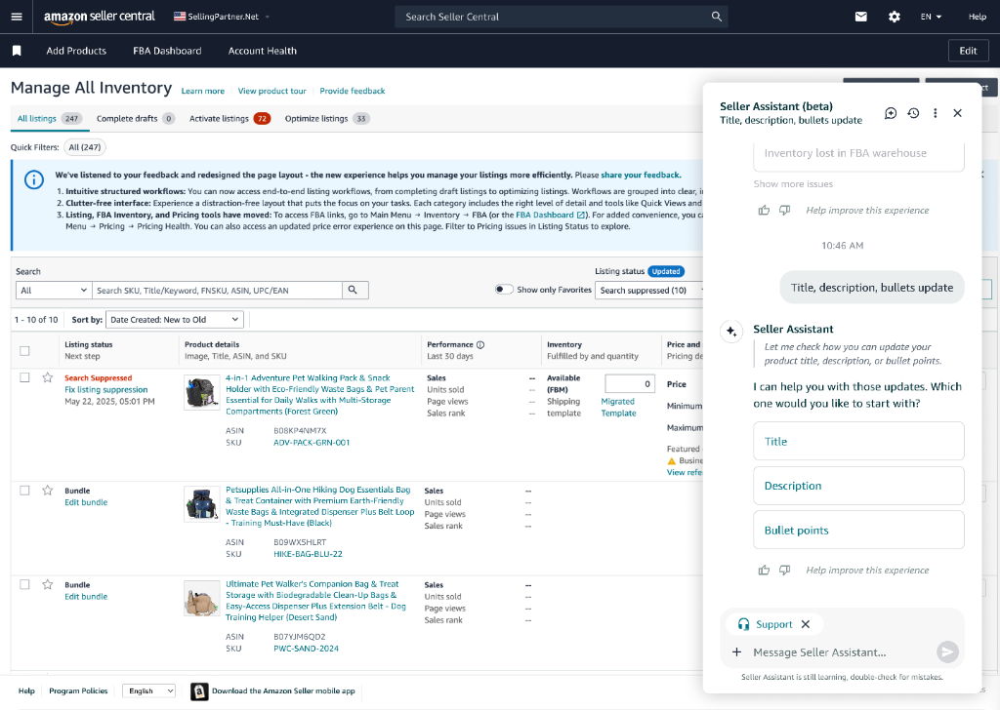
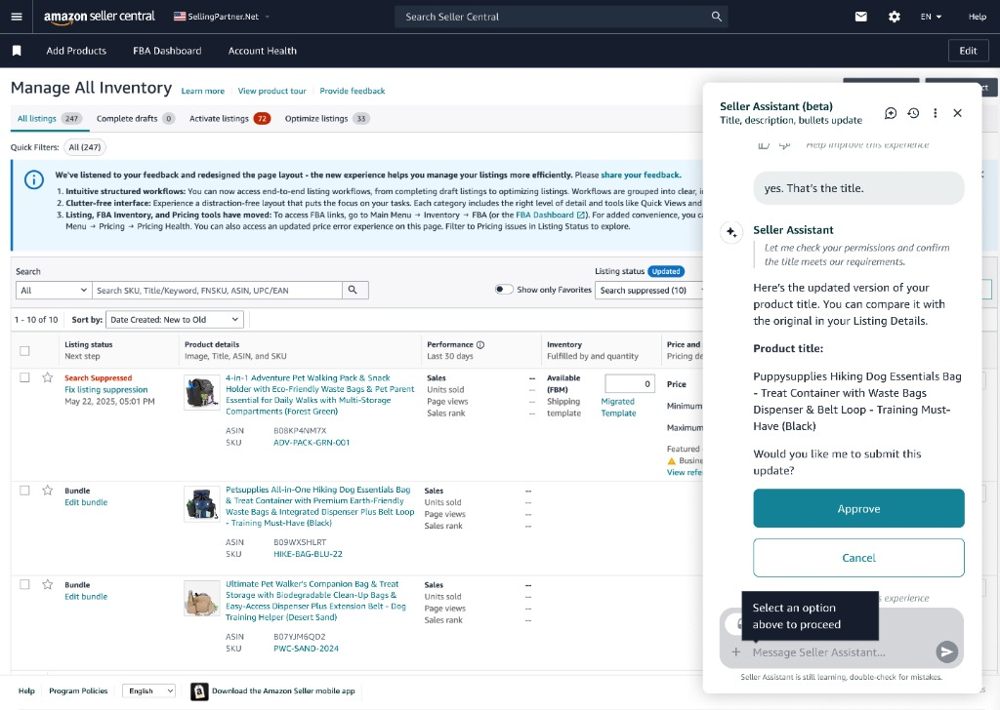

Amazon AI-powered Assistant Support
Embedded AI-powered support experience to resolve common listing issues conversationally.
Overview
Amazon sellers frequently encounter issues while managing listings—such as suppressed listings, title updates, or permission-related errors. Historically, resolving these issues required sellers to leave their workflow, navigate rigid help flows, and repeatedly explain context to multiple systems or agents.
This project introduces Seller Assistant, an AI-powered support experience embedded directly within Seller Central workflows. Seller Assistant enables sellers to self-resolve common issues conversationally, while seamlessly escalating to human support with full context preservation when automation reaches its limits.
Manage All Inventory – Issue Discovery (Inventory page showing suppressed listings)
The Problem
1. Support Was Detached from Seller Workflows
Sellers often discovered issues while managing inventory, but support lived elsewhere. This caused:
- Loss of task context
- Re-entry of ASINs, issue descriptions, and history
- Increased frustration and time-to-resolution
2. Static Forms Couldn’t Handle Real-World Edge Cases
While many listing updates are straightforward, sellers frequently run into nuanced issues:
- Permission constraints
- Brand ownership mismatches
- Delayed propagation across marketplaces
Legacy systems forced these cases into rigid forms that failed silently or routed incorrectly.
Design Goals
We designed Seller Assistant to:
- Live inside seller workflows
- Resolve high-frequency issues autonomously
- Detect automation limits early
- Hand off to humans without losing context
- Maintain seller trust through transparency and confirmation
Solution: Seller Assistant (Beta)
Seller Assistant is a persistent side-panel assistant embedded in Seller Central that:
- Understands seller context (page, ASINs, account state)
- Guides resolution through conversation
- Explains system behavior and delays
- Seamlessly escalates to live support when required
Key Experience Flows
1. Proactive, Context-Aware Entry into Support
Seller Assistant launches directly from Manage All Inventory, already aware of:
- Visible ASINs
- Listing status (e.g., suppressed)
- Common issues associated with that context
It proactively suggests relevant actions instead of asking sellers to start from scratch.
Assistant Open with Recommendations
2. Conversational Self-Serve Resolution
When a seller selects Title, description, bullets update, the assistant:
- Asks which attribute to update
- Pulls eligible ASINs automatically
- Recalls prior submissions (e.g., previously submitted titles)
- Guides the seller step-by-step
This replaces static forms with adaptive conversation.
Attribute selection and ASIN list surfaced automatically
3. Explicit Review & Approval for Trust
Before making any changes, Seller Assistant:
- Displays the proposed update
- Explains implications (e.g., propagation delay up to 48 hours)
- Requires explicit seller approval
This reinforces control, trust, and accountability in AI-assisted workflows.
Approve / Cancel State with Confirmation Copy
4. Post-Action Guidance & Expectation Setting
After approval, Seller Assistant:
- Confirms success
- Sets clear expectations about update timelines
- Offers next relevant actions (e.g., update bullets next)
5. Intelligent Follow-Up & Ongoing Support
If the seller returns later with concerns (e.g., “My title hasn’t updated after 25 hours”), Seller Assistant:
- Retrieves conversation history
- Explains system behavior (load, length limits, processing windows)
- Provides actionable next steps without escalation

Context-aware follow-up assistance
6. Seamless AI → Human Escalation with Context Preservation
When the assistant detects an issue it cannot resolve (e.g., edit permissions / Brand Registry constraints), it:
- Summarizes the issue automatically
- Passes full context (ASIN, seller explanation, prior actions)
- Transfers to a live agent without requiring repetition

Live agent joins with context acknowledged
7. Clear Closure & Case Transparency
After live support:
- Resolution is summarized
- Case ID is surfaced
- Seller can resume AI support immediately
Resolution summary and Case ID view
UX Decisions That Matter
Why a Persistent Side Panel?
- Preserves seller context
- Enables multi-turn conversations
- Supports escalation without navigation
Why Not Full Automation?
- Listing updates are business-critical
- Permission errors require human judgment
- Trust is built through clarity, not speed alone
Why Pause AI During Live Chat?
- Prevents conflicting guidance
- Signals role clarity between AI and human support
Scope & Rollout
Phase 1
- Embedded Seller Assistant in Manage All Inventory
- Focused on listing updates and common issues
- Enabled self-serve + escalation flows
My Role
As the UX Designer, I:
- Defined the end-to-end AI + human support experience
- Designed conversational flows, approval states, and escalation logic
- Partnered with Product, Engineering, and Support Ops to ensure safe automation
- Advocated for trust, clarity, and continuity in AI interactions
Impact
- Reduced seller effort for common listing updates
- Fewer repeat contacts due to clearer expectations
- Higher confidence in self-service
- Improved agent efficiency via context-rich handoffs